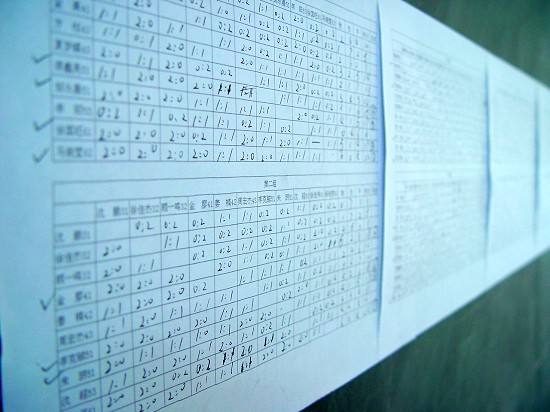
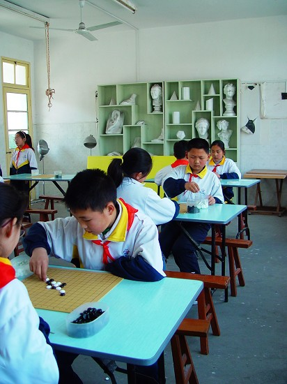

南通市港闸区小学生五子棋比赛专题
#1 南通市港闸区小学生五子棋比赛专题作者：有志青年 发表时间：2007-4-12 15:20:42
6月份的小学生五子棋比赛将非常激烈，目前状况如下：唐闸小学共计132人报名，将在比赛中选出5人【绝对实战型】
鹤涛小学由温柔一刀区蝉联三年的教师五子棋冠军辅导，每天下午第一课教学【每天呀！】
永兴小学由德胜老师区教师五子棋首届冠军辅导。【今天开始启动，后发制人】
#2 今日中午在唐闸小学拍摄的照片作者：有志青年 发表时间：2007-4-16 20:28:20
一、132人的分组单循环赛，今日结束，将选出42人进入第二轮单循环赛

二、比赛中的学生
#3 Re:南通市港闸区小学生五子棋比赛专题作者：黄药师 发表时间：2007-4-16 20:40:22
我累坏了，第一阶段终于结束了！